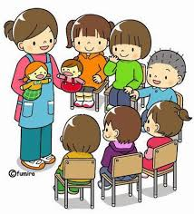
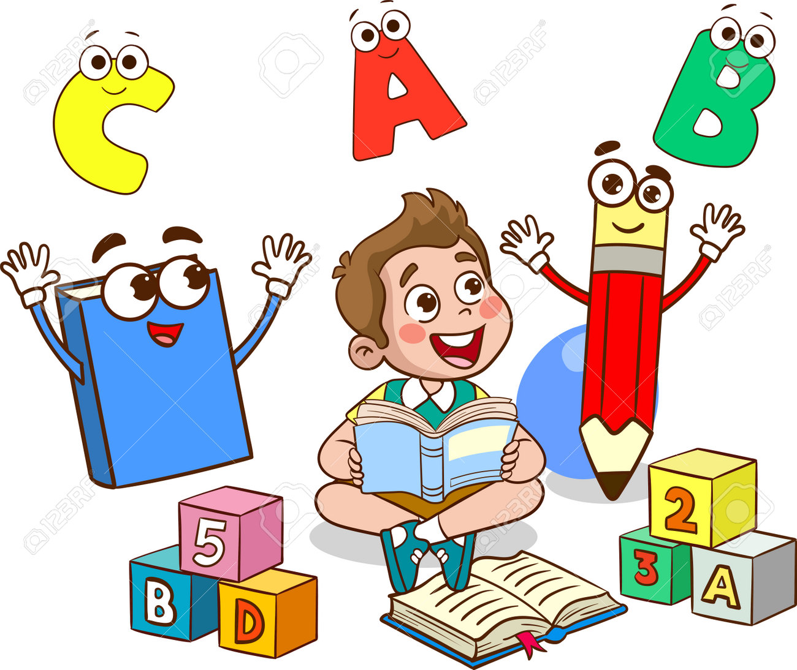
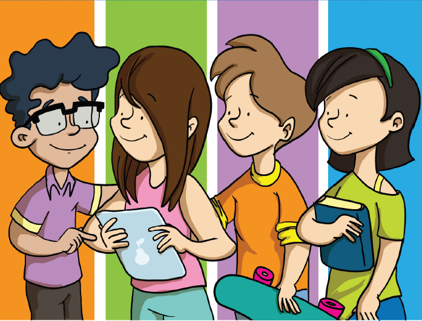

|
 Parvularia |
 Primaria |
 Tercer Ciclo |
Bachillerato |
|
El nivel de Parvularia tiene como objetivo alcanzar un desarrollo integral de la personalidad en su dimensión espiritual, moral y de adaptación social; haciendo énfasis en cultivar la autonomía de los niños y niñas de 4, 5 y 6 años para desarrollar habilidades y destrezas que le permiten conocer, comprender y transformar su entorno, así como también lograr la adecuada incorporación a la Educación Básica. Con materias especiales recibidas desde este nivel, como son: * Inglés intensivo * Clases de francés * Formación tecnológica * Robótica |
En el nivel de primaria, tiene como objetivo alcanzar en los estudiantes una formación integral fundamentada en disciplina para fortalecer la convivencia sana a través de los valores cristianos, se enfoca en crear y reforzar las bases de la correcta lectura, escritura y cálculos matemáticos, desarrollando las habilidades y competencias para solucionar problemas de su entorno. Con materias que ayudan a brindar una formación integral, como son: * Educación artistica * Educación física * Educación musical * Identidad cultural |
El enfoque pedagógico que utiliza el Colegio Carlos Pellicer es Constructivista - Humanista. Aplicando una metodología por competencias la cual tiene como objetivo la adquisición de conocimientos, el desarrollo de habilidades y la solidificación de hábitos de trabajo. Nuestra pedagogía es centrada en los estudiantes, que los convierten en el referente principal de la enseñanza, potenciando capacidades, habilidades, destrezas y actitudes para efectuar tareas y resolver problemáticas en situaciones diversas de forma eficaz en un contexto determinado. Con materias especiales que refuerzan sus conocimientos, como son: * Laboratorio de ciencias * Inglés intensivo (por niveles) * Historia * Gramática |
El Colegio Carlos Pellicer en nivel de Bachillerato, tiene como objetivo una Formación Integral que permite alcanzar la excelencia académica, potenciando valores morales y espirituales así como las habilidades y destrezas para la resolución de problemas, formando en los estudiantes una actitud crítica que responda a los retos de la sociedad actual acorde a las exigencias tecnológicas y bilingües con el propósito de facilitar la incorporación y adaptación a la educación superior y mundo laboral. Con nuestra variada oferta academica: * Bachillerato general con diplomado en gatronomía * Bachillerato general con diplomado en idioma inglés * Bachillerato general con diplomado en diseño gráfico * Bachillerato general con diplomado en salud * Bachillerato técnico vocacional contador |